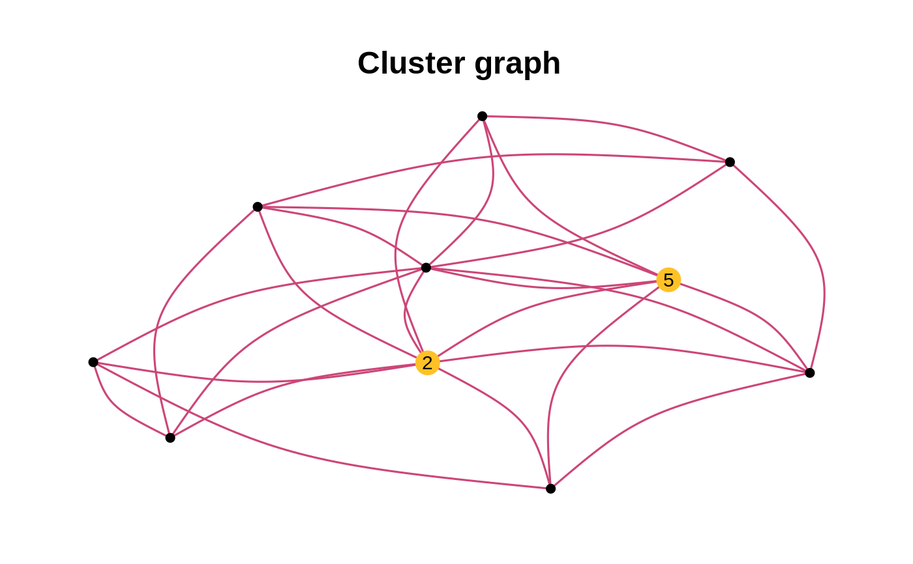

draw_network.RdPlots a natwork
draw_network(adj_matrix, title = "", size = 4, curv = 0.2, width = 1, alpha = FALSE, filter_deg = FALSE, nb = 3, layout = NULL, nodes_label = NULL, pal = NULL, seed = 200, groupes = NULL)
| adj_matrix | graph adjacency matrix |
|---|---|
| title | graph title |
| size | size of nodes |
| curv | edges curvature |
| width | maximum width for the edges |
| alpha | if TRUE, sets to transparent the edges non-linked to nodes with high betweenness |
| filter_deg | selects nodes with a higher degree than filter_deg |
| nb | sets the number of nodes selected by thresholding the beetweenness scores |
| layout | optional ggraph layout. |
| nodes_label | optional labels for nodes. |
| pal | optional palette. |
| seed | optional seed for graph reproductibility. |
| groupes | optional vector seperating the nodes into groupes |
G the network as a ggplot2 object, with highlighted high betweenness nodes
graph_data data needed for plotting the network
adj_matrix= SimCluster(p=30,k=3,dens=0.4, r=50) draw_network(adj_matrix,"Cluster graph", layout="fr",curv=0.1)#> $G#> #> $graph_data #> # A tbl_graph: 30 nodes and 182 edges #> # #> # An undirected simple graph with 1 component #> # #> # Node Data: 30 x 8 (active) #> btw bool_btw bool_deg deg title name label finalcolor #> <dbl> <lgl> <lgl> <dbl> <chr> <int> <chr> <lgl> #> 1 0.243 FALSE TRUE 13 Cluster graph 1 "" FALSE #> 2 9.60 FALSE TRUE 13 Cluster graph 2 "" FALSE #> 3 2.90 FALSE TRUE 6 Cluster graph 3 "" FALSE #> 4 1.5 FALSE TRUE 12 Cluster graph 4 "" FALSE #> 5 16.1 FALSE TRUE 9 Cluster graph 5 "" FALSE #> 6 12.5 FALSE TRUE 13 Cluster graph 6 "" FALSE #> # … with 24 more rows #> # #> # Edge Data: 182 x 6 #> from to weight btw.weights neibs title #> <int> <int> <dbl> <dbl> <lgl> <chr> #> 1 1 8 1 0.693 FALSE Cluster graph #> 2 1 11 1 0.693 TRUE Cluster graph #> 3 1 12 1 0.693 FALSE Cluster graph #> # … with 179 more rows #>